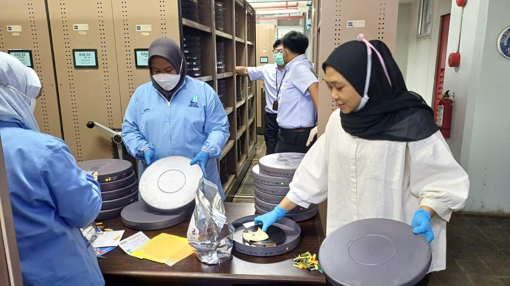
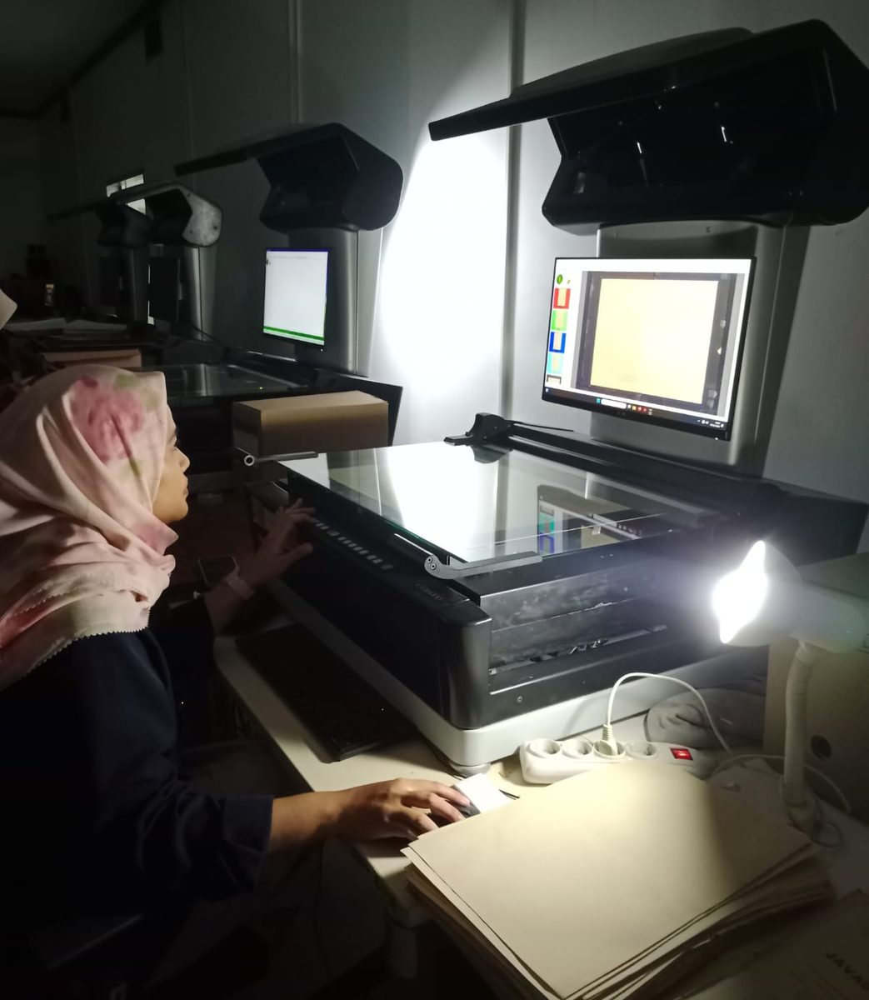
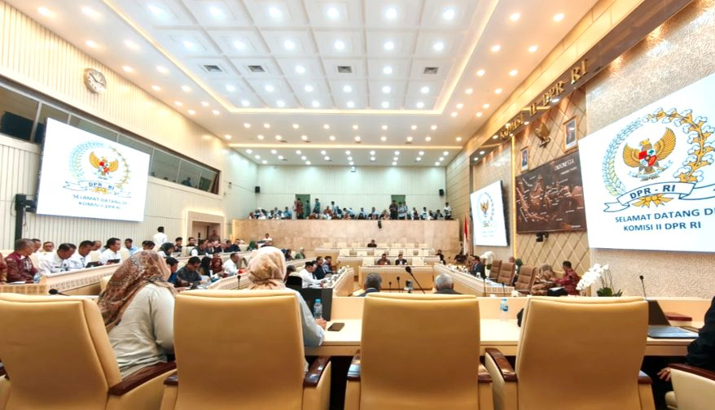

Tren realisasi 2026
Angka kumulatif ANRI dari setiap sheet bulanan
Persentase realisasi terhadap pagu aktif
SP2DSPM
Realisasi SP2D per bulan
Pencairan yang terjadi di bulan itu saja, bukan kumulatif



Unit kerja
Serapan anggaran dibanding capaian fisik
Satu titik satu unit eselon II. Di atas garis putus-putus berarti fisik lebih maju dari serapan SP2D. Klik titik untuk melihat RO unit itu.
Program dan satuan kerja
% SP2D% SPM
| Unit kerja | Pagu aktif | Realisasi SP2D s.d. | Serapan SP2D | Capaian fisik |
|---|
Rincian output (RO)
Target, realisasi, dan catatan setiap rincian output
| Kode | Rincian output | Target | Realisasi s.d. | Capaian fisik | Serapan SP2D | Pagu aktif |
|---|